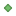

<!doctype html>
<html lang="en">
    <head>
        <meta charset="utf-8">
        <meta http-equiv="X-UA-Compatible" content="IE=edge">
        <meta name="viewport" content="initial-scale=1,user-scalable=no,maximum-scale=1,width=device-width">
        <meta name="mobile-web-app-capable" content="yes">
        <meta name="apple-mobile-web-app-capable" content="yes">
        <link rel="stylesheet" href="css/leaflet.css"><link rel="stylesheet" href="css/L.Control.Locate.min.css">
        <link rel="stylesheet" href="css/qgis2web.css"><link rel="stylesheet" href="css/fontawesome-all.min.css">
        <link rel="stylesheet" href="css/MarkerCluster.css">
        <link rel="stylesheet" href="css/MarkerCluster.Default.css">
        <link rel="stylesheet" href="css/leaflet-measure.css">
        <style>
        html, body, #map {
            width: 100%;
            height: 100%;
            padding: 0;
            margin: 0;
        }
        </style>
        <title></title>
    </head>
    <body>
        <div id="map">
        </div>
        <script src="js/qgis2web_expressions.js"></script>
        <script src="js/leaflet.js"></script><script src="js/L.Control.Locate.min.js"></script>
        <script src="js/leaflet-svg-shape-markers.min.js"></script>
        <script src="js/leaflet.rotatedMarker.js"></script>
        <script src="js/leaflet.pattern.js"></script>
        <script src="js/leaflet-hash.js"></script>
        <script src="js/Autolinker.min.js"></script>
        <script src="js/rbush.min.js"></script>
        <script src="js/labelgun.min.js"></script>
        <script src="js/labels.js"></script>
        <script src="js/leaflet-measure.js"></script>
        <script src="js/leaflet.markercluster.js"></script>
        <script src="data/gs_pool_1.js"></script>
        <script src="data/gs_bouka_2.js"></script>
        <script src="data/gs_shoukasen_3.js"></script>
        <script>
        var map = L.map('map', {
            zoomControl:true, maxZoom:28, minZoom:1
        }).fitBounds([[35.35554964742636,136.90474669289583],[35.36851345095341,136.93115544575568]]);
        var hash = new L.Hash(map);
        map.attributionControl.setPrefix('<a href="https://github.com/tomchadwin/qgis2web" target="_blank">qgis2web</a> &middot; <a href="https://leafletjs.com" title="A JS library for interactive maps">Leaflet</a> &middot; <a href="https://qgis.org">QGIS</a>');
        var autolinker = new Autolinker({truncate: {length: 30, location: 'smart'}});
        function removeEmptyRowsFromPopupContent(content, feature) {
         var tempDiv = document.createElement('div');
         tempDiv.innerHTML = content;
         var rows = tempDiv.querySelectorAll('tr');
         for (var i = 0; i < rows.length; i++) {
             var td = rows[i].querySelector('td.visible-with-data');
             var key = td ? td.id : '';
             if (td && td.classList.contains('visible-with-data') && feature.properties[key] == null) {
                 rows[i].parentNode.removeChild(rows[i]);
             }
         }
         return tempDiv.innerHTML;
        }
        document.querySelector(".leaflet-popup-pane").addEventListener("load", function(event) {
          var tagName = event.target.tagName,
            popup = map._popup;
          // Also check if flag is already set.
          if (tagName === "IMG" && popup && !popup._updated) {
            popup._updated = true; // Set flag to prevent looping.
            popup.update();
          }
        }, true);
        L.control.locate({locateOptions: {maxZoom: 19}}).addTo(map);
        var measureControl = new L.Control.Measure({
            position: 'topleft',
            primaryLengthUnit: 'meters',
            secondaryLengthUnit: 'kilometers',
            primaryAreaUnit: 'sqmeters',
            secondaryAreaUnit: 'hectares'
        });
        measureControl.addTo(map);
        document.getElementsByClassName('leaflet-control-measure-toggle')[0]
        .innerHTML = '';
        document.getElementsByClassName('leaflet-control-measure-toggle')[0]
        .className += ' fas fa-ruler';
        var bounds_group = new L.featureGroup([]);
        function setBounds() {
        }
        map.createPane('pane_OpenStreetMap_0');
        map.getPane('pane_OpenStreetMap_0').style.zIndex = 400;
        var layer_OpenStreetMap_0 = L.tileLayer('https://tile.openstreetmap.org/{z}/{x}/{y}.png', {
            pane: 'pane_OpenStreetMap_0',
            opacity: 1.0,
            attribution: '',
            minZoom: 1,
            maxZoom: 28,
            minNativeZoom: 0,
            maxNativeZoom: 19
        });
        layer_OpenStreetMap_0;
        map.addLayer(layer_OpenStreetMap_0);
        function pop_gs_pool_1(feature, layer) {
            var popupContent = '<table>\
                    <tr>\
                        <th scope="row">緯度</th>\
                        <td class="visible-with-data" id="緯度">' + (feature.properties['緯度'] !== null ? autolinker.link(feature.properties['緯度'].toLocaleString()) : '') + '</td>\
                    </tr>\
                    <tr>\
                        <th scope="row">経度</th>\
                        <td class="visible-with-data" id="経度">' + (feature.properties['経度'] !== null ? autolinker.link(feature.properties['経度'].toLocaleString()) : '') + '</td>\
                    </tr>\
                    <tr>\
                        <th scope="row">水利番号</th>\
                        <td>' + (feature.properties['水利番号'] !== null ? autolinker.link(feature.properties['水利番号'].toLocaleString()) : '') + '</td>\
                    </tr>\
                    <tr>\
                        <th scope="row">水利の種類</th>\
                        <td class="visible-with-data" id="水利の種類">' + (feature.properties['水利の種類'] !== null ? autolinker.link(feature.properties['水利の種類'].toLocaleString()) : '') + '</td>\
                    </tr>\
                </table>';
            layer.bindPopup(popupContent, {maxHeight: 400});
            var popup = layer.getPopup();
            var content = popup.getContent();
            var updatedContent = removeEmptyRowsFromPopupContent(content, feature);
            popup.setContent(updatedContent);
        }

        function style_gs_pool_1_0() {
            return {
                pane: 'pane_gs_pool_1',
                shape: 'diamond',
                radius: 5.2,
                opacity: 1,
                color: 'rgba(61,128,53,1.0)',
                dashArray: '',
                lineCap: 'butt',
                lineJoin: 'miter',
                weight: 2.0,
                fill: true,
                fillOpacity: 1,
                fillColor: 'rgba(84,176,74,1.0)',
                interactive: true,
            }
        }
        map.createPane('pane_gs_pool_1');
        map.getPane('pane_gs_pool_1').style.zIndex = 401;
        map.getPane('pane_gs_pool_1').style['mix-blend-mode'] = 'normal';
        var layer_gs_pool_1 = new L.geoJson(json_gs_pool_1, {
            attribution: '',
            interactive: true,
            dataVar: 'json_gs_pool_1',
            layerName: 'layer_gs_pool_1',
            pane: 'pane_gs_pool_1',
            onEachFeature: pop_gs_pool_1,
            pointToLayer: function (feature, latlng) {
                var context = {
                    feature: feature,
                    variables: {}
                };
                return L.shapeMarker(latlng, style_gs_pool_1_0(feature));
            },
        });
        var cluster_gs_pool_1 = new L.MarkerClusterGroup({showCoverageOnHover: false,
            spiderfyDistanceMultiplier: 2});
        cluster_gs_pool_1.addLayer(layer_gs_pool_1);

        bounds_group.addLayer(layer_gs_pool_1);
        cluster_gs_pool_1.addTo(map);
        function pop_gs_bouka_2(feature, layer) {
            var popupContent = '<table>\
                    <tr>\
                        <th scope="row">緯度</th>\
                        <td class="visible-with-data" id="緯度">' + (feature.properties['緯度'] !== null ? autolinker.link(feature.properties['緯度'].toLocaleString()) : '') + '</td>\
                    </tr>\
                    <tr>\
                        <th scope="row">経度</th>\
                        <td class="visible-with-data" id="経度">' + (feature.properties['経度'] !== null ? autolinker.link(feature.properties['経度'].toLocaleString()) : '') + '</td>\
                    </tr>\
                    <tr>\
                        <th scope="row">水利番号</th>\
                        <td class="visible-with-data" id="水利番号">' + (feature.properties['水利番号'] !== null ? autolinker.link(feature.properties['水利番号'].toLocaleString()) : '') + '</td>\
                    </tr>\
                    <tr>\
                        <th scope="row">水利の種類</th>\
                        <td class="visible-with-data" id="水利の種類">' + (feature.properties['水利の種類'] !== null ? autolinker.link(feature.properties['水利の種類'].toLocaleString()) : '') + '</td>\
                    </tr>\
                </table>';
            layer.bindPopup(popupContent, {maxHeight: 400});
            var popup = layer.getPopup();
            var content = popup.getContent();
            var updatedContent = removeEmptyRowsFromPopupContent(content, feature);
            popup.setContent(updatedContent);
        }

        function style_gs_bouka_2_0() {
            return {
                pane: 'pane_gs_bouka_2',
                radius: 5.2,
                opacity: 1,
                color: 'rgba(35,35,35,1.0)',
                dashArray: '',
                lineCap: 'butt',
                lineJoin: 'miter',
                weight: 1,
                fill: true,
                fillOpacity: 1,
                fillColor: 'rgba(231,113,72,1.0)',
                interactive: true,
            }
        }
        map.createPane('pane_gs_bouka_2');
        map.getPane('pane_gs_bouka_2').style.zIndex = 402;
        map.getPane('pane_gs_bouka_2').style['mix-blend-mode'] = 'normal';
        var layer_gs_bouka_2 = new L.geoJson(json_gs_bouka_2, {
            attribution: '',
            interactive: true,
            dataVar: 'json_gs_bouka_2',
            layerName: 'layer_gs_bouka_2',
            pane: 'pane_gs_bouka_2',
            onEachFeature: pop_gs_bouka_2,
            pointToLayer: function (feature, latlng) {
                var context = {
                    feature: feature,
                    variables: {}
                };
                return L.circleMarker(latlng, style_gs_bouka_2_0(feature));
            },
        });
        var cluster_gs_bouka_2 = new L.MarkerClusterGroup({showCoverageOnHover: false,
            spiderfyDistanceMultiplier: 2});
        cluster_gs_bouka_2.addLayer(layer_gs_bouka_2);

        bounds_group.addLayer(layer_gs_bouka_2);
        cluster_gs_bouka_2.addTo(map);
        function pop_gs_shoukasen_3(feature, layer) {
            var popupContent = '<table>\
                    <tr>\
                        <th scope="row">緯度</th>\
                        <td class="visible-with-data" id="緯度">' + (feature.properties['緯度'] !== null ? autolinker.link(feature.properties['緯度'].toLocaleString()) : '') + '</td>\
                    </tr>\
                    <tr>\
                        <th scope="row">経度</th>\
                        <td class="visible-with-data" id="経度">' + (feature.properties['経度'] !== null ? autolinker.link(feature.properties['経度'].toLocaleString()) : '') + '</td>\
                    </tr>\
                    <tr>\
                        <th scope="row">水利番号</th>\
                        <td class="visible-with-data" id="水利番号">' + (feature.properties['水利番号'] !== null ? autolinker.link(feature.properties['水利番号'].toLocaleString()) : '') + '</td>\
                    </tr>\
                    <tr>\
                        <th scope="row">水利の種類</th>\
                        <td>' + (feature.properties['水利の種類'] !== null ? autolinker.link(feature.properties['水利の種類'].toLocaleString()) : '') + '</td>\
                    </tr>\
                </table>';
            layer.bindPopup(popupContent, {maxHeight: 400});
            var popup = layer.getPopup();
            var content = popup.getContent();
            var updatedContent = removeEmptyRowsFromPopupContent(content, feature);
            popup.setContent(updatedContent);
        }

        function style_gs_shoukasen_3_0() {
            return {
                pane: 'pane_gs_shoukasen_3',
                radius: 5.2,
                opacity: 1,
                color: 'rgba(35,35,35,1.0)',
                dashArray: '',
                lineCap: 'butt',
                lineJoin: 'miter',
                weight: 1,
                fill: true,
                fillOpacity: 1,
                fillColor: 'rgba(253,236,111,1.0)',
                interactive: true,
            }
        }
        map.createPane('pane_gs_shoukasen_3');
        map.getPane('pane_gs_shoukasen_3').style.zIndex = 403;
        map.getPane('pane_gs_shoukasen_3').style['mix-blend-mode'] = 'normal';
        var layer_gs_shoukasen_3 = new L.geoJson(json_gs_shoukasen_3, {
            attribution: '',
            interactive: true,
            dataVar: 'json_gs_shoukasen_3',
            layerName: 'layer_gs_shoukasen_3',
            pane: 'pane_gs_shoukasen_3',
            onEachFeature: pop_gs_shoukasen_3,
            pointToLayer: function (feature, latlng) {
                var context = {
                    feature: feature,
                    variables: {}
                };
                return L.circleMarker(latlng, style_gs_shoukasen_3_0(feature));
            },
        });
        var cluster_gs_shoukasen_3 = new L.MarkerClusterGroup({showCoverageOnHover: false,
            spiderfyDistanceMultiplier: 2});
        cluster_gs_shoukasen_3.addLayer(layer_gs_shoukasen_3);

        bounds_group.addLayer(layer_gs_shoukasen_3);
        cluster_gs_shoukasen_3.addTo(map);
        var baseMaps = {};
        L.control.layers(baseMaps,{' gs_shoukasen': cluster_gs_shoukasen_3,' gs_bouka': cluster_gs_bouka_2,' gs_pool': cluster_gs_pool_1,"OpenStreetMap": layer_OpenStreetMap_0,}).addTo(map);
        setBounds();
        </script>
    </body>
</html>
